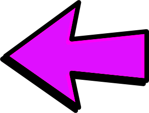

¿Tienes dudas de como hacer el proceso de modificacion? No temas por que es un proceso de aprender, y presentare un ejemplo personal para tener idea de unos de los procesos, con uno simple de hacer, y implementar, cambiando las texturas! Se usara el emulador de Gamecube "Dolphin" para demonstrar como haran los pasos.
Back
Yo Juan Monsanto declaro esta asignacion de Projecto Final para el desarrollo de pagina web para la Universidad Interamericana de Puerto Rico del recinto de Ponce, publicado en el 8 de diciembre de 2020; es major parte mi propio trabajo. Las imagenes presente no son obras mia y pertenecen a sus publicadores original. La imagen de background en el titulo de cada pagina pertenece al author file404. Editada para convenencia. La imagen de background original para el body en toda la paginas pertenece a vreddane. Editada para convenencia. La imagenes de flechas para navegacion pertenece a Ocal. Editado para convenencia. La imagen de la creatividad en la pagina de posibilidades pertenece al author tatkuptsova La imagen del multiplayer mod de Ocarina of Time origina de esta pagina Zelda Universe La imagen Shaggy en Jump Force origina del Tweet de Beatz. La imagen de las modificaciones visuales de Skyrim origina de un video Youtube de Dakart El ejemplo de Vanilla Minecraft origina de esta pagina del author 0nefourth El ejemplo sombreador de Minecraft origino de este blog por Daniel He Hetianding. La imagen en la pagina de Por qué pertenece al author katedemianov. La texturas en la pagina de ejemplo fue creado para mi por JesseBizarreArt La frase cotizada eran la palabra de Satoru Iwata, el cuarto presidente de Nintendo que ha fallecido, dicho en la Conferencia de desarrolladores de juegos en el año 2006. La imagenes relacionada a Dolphin emulator fueron captura de pantalla, para la programacion sigue aqui. La imagenes relacionada al producto de Intelligent Systems, Paper Mario: The Thousand-Year Door (2004) [Gamecube] publicado por Nintendo fueron captura de pantalla. Intelligent Systems y Nintendo.